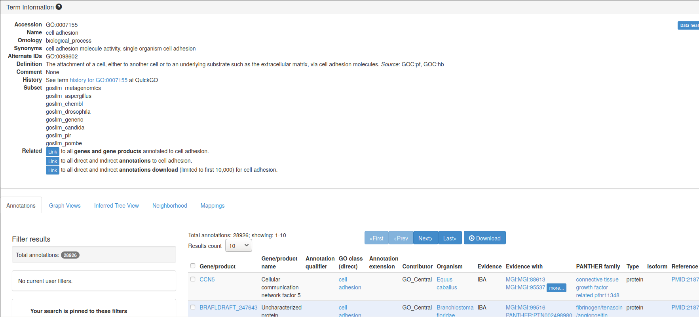
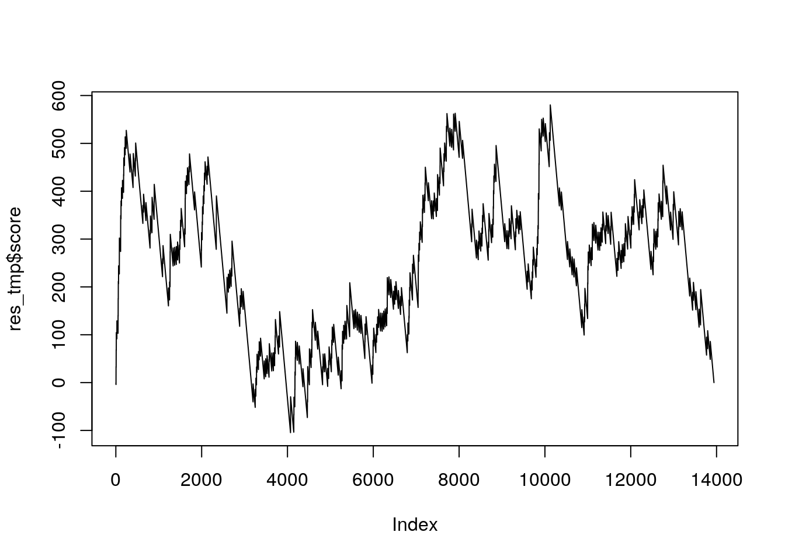
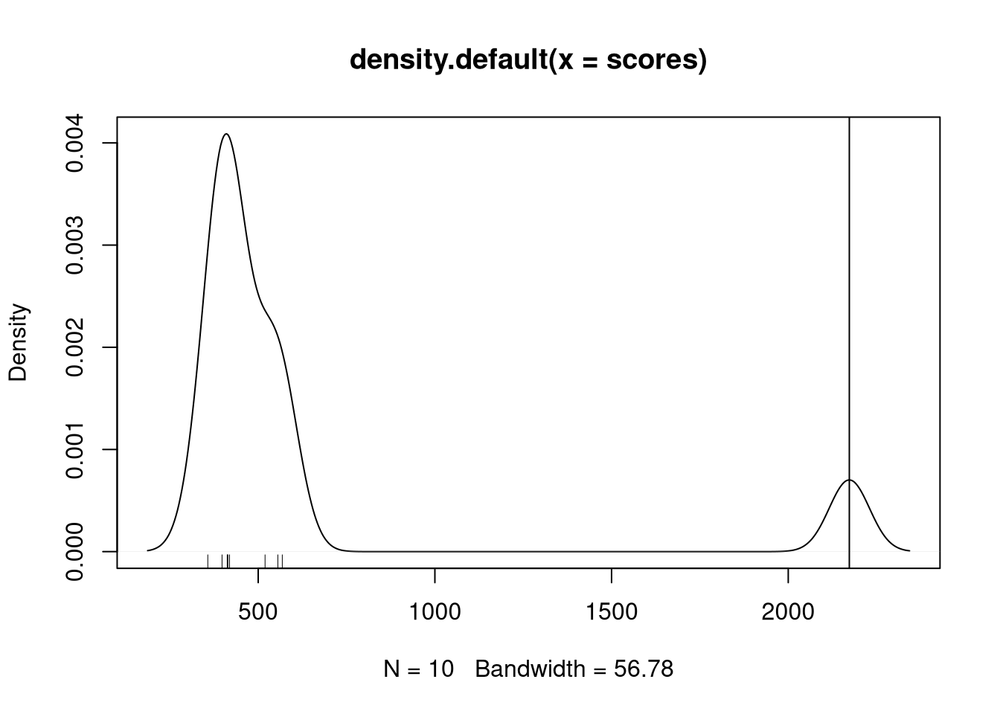
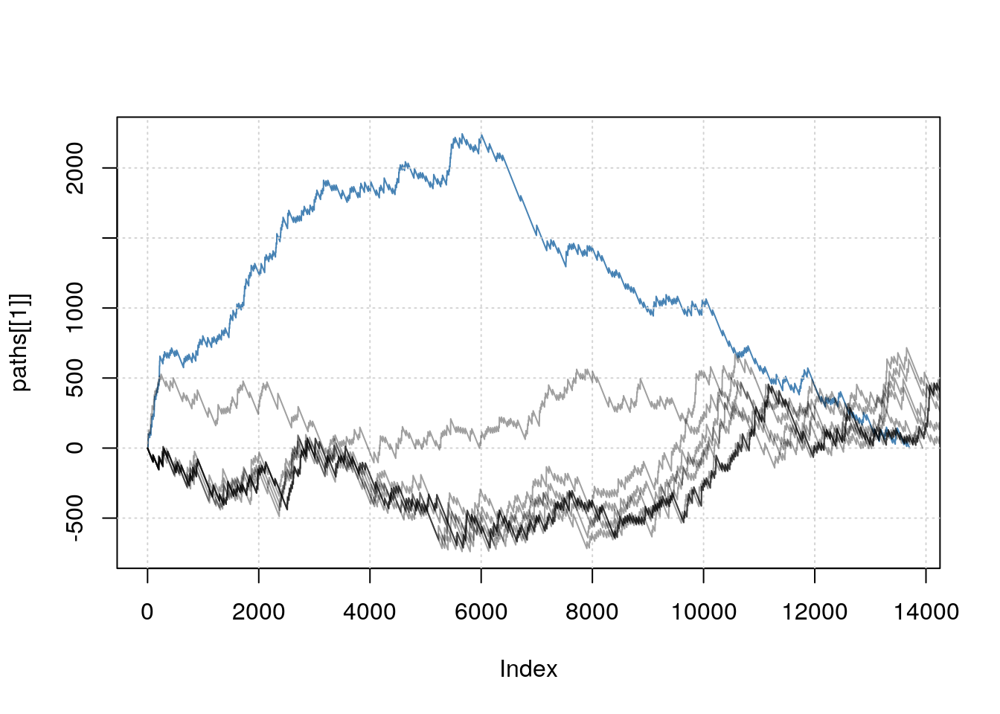
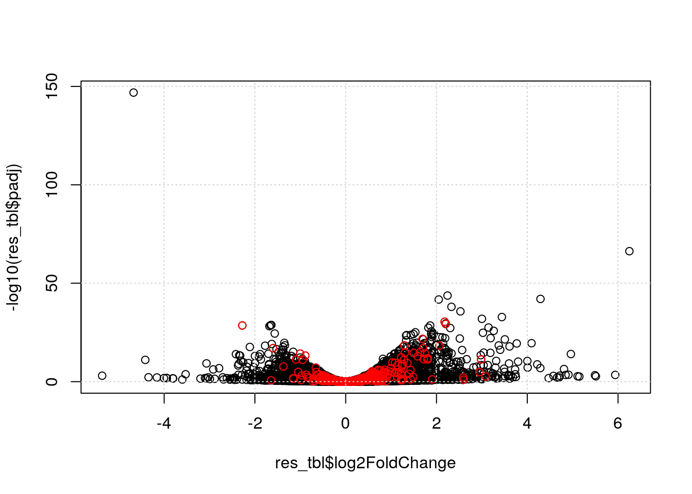

Chapter 6 Enrichment analyses
Motivation: at the end of this chapter, the students will be able to address the following points:
- What are the next steps after a differential expression analysis?
- Why are enrichment analyses useful?
- Understanding over representation analyses.
- Understanding a gene set enrichment analysis.
- Application of the clusterProfiler package.
6.1 Introduction
Differential expression analysis is univariate - each gene is tested on its own. This probably doesn't reflect the underlying biology - genes work in conjunction, not in isolation. One wouldn't expect that the effect of a drug, or a mutation, ... would lead to the perturbation of a single gene expression.
The univariate approach expects (or tests for) significant changes in single genes. Moderate effects in many (related) genes cannot, by definition be identified as statistically significant, even it such an effect may be biologically more plausible that one of a few large ones.
The goal of an enrichment analysis is to test for a group of related genes, called gene sets, and test whether the genes within these sets are enriched for differentially expression.
6.2 Gene sets
While nothing would stop a user to create their own gene sets, the sets that are generally used stem from community-maintained resources.
6.2.1 Gene Ontology (GO)
The Gene Ontology (Ashburner et al. 2000Ashburner, M, C A Ball, J A Blake, D Botstein, H Butler, J M Cherry, A P Davis, et al. 2000. “Gene Ontology: Tool for the Unification of Biology. the Gene Ontology Consortium.” Nat Genet 25 (1): 25–29. doi:10.1038/75556.) defines GO terms. These terms are based on a controlled vocabulary (to resuse the same words in a consistent way) and relations13 Example of relations between terms are, for example, is_a (mitosis is_a cell cycle phase) or part_of (mitosis part_of M phase of mitotic cell cycle). that define the directed links between terms. These relations define a hierarchy between GO terms: all term can be represented as a (direct acyclic) graph (DAG). There exist thus very general and very specific terms.
These terms are classed into three categories, called namespaces:
- Molecular Function (MF): molecular activities of gene products
- Cellular Component (CC): where gene products are active
- Biological Process (BP): pathways and larger processes made up of the activities of multiple gene products
Here's an example of GO term GO:0007155, that describes cell adhesion.
A Term from the GO ontology: GO:0007155
Label: cell adhesion
The attachment of a cell, either to another cell or to an underlying
substrate such as the extracellular matrix, via cell adhesion
molecules.If you look at the GO term GO:0007155 entry on the Gene Ontology page, you can find more details and, if you scroll down, example genes that are annotated with that term.
Figure 6.1: Gene ontology entry for the GO term for cell adhesion.
The whole Gene Ontology is can be accessed in R with the GO.db package.
In the code chunk below, we query the GO.db package through the org.Hs.eg.db interface. This org.db-type of packages for Homo sapiens enables to perform various queries for human genes, such as retrieving all gene symbols and ENTREZ identifiers (the columns below) that are annotated with a GO term (the keys below) of interest.
The GO term of interest here is focal adhesion:
A cell-substrate junction that anchors the cell to the extracellular
matrix and that forms a point of termination of actin filaments. In
insects focal adhesion has also been referred to as hemi-adherens
junction (HAJ).library("GO.db")
library("org.Hs.eg.db")
GO_0005925 <- AnnotationDbi::select(org.Hs.eg.db,
keys = "GO:0005925",
columns = c("ENTREZID", "SYMBOL"),
keytype = "GO") %>%
as_tibble %>%
filter(!duplicated(ENTREZID))## 'select()' returned 1:many mapping between keys and columnsGO_0005925## # A tibble: 405 x 5
## GO EVIDENCE ONTOLOGY ENTREZID SYMBOL
## <chr> <chr> <chr> <chr> <chr>
## 1 GO:0005925 HDA CC 60 ACTB
## 2 GO:0005925 HDA CC 70 ACTC1
## 3 GO:0005925 ISS CC 71 ACTG1
## 4 GO:0005925 HDA CC 81 ACTN4
## 5 GO:0005925 HDA CC 87 ACTN1
## 6 GO:0005925 IMP CC 88 ACTN2
## 7 GO:0005925 IMP CC 89 ACTN3
## 8 GO:0005925 HDA CC 102 ADAM10
## 9 GO:0005925 HDA CC 118 ADD1
## 10 GO:0005925 HDA CC 214 ALCAM
## # … with 395 more rowsWe have 405 genes matching this GO term. There are thus 405 genes in the GO_0005925 GO set.
► Question
Repeat the code above to extract the genes annotated with the GO:0005813 term for the centrosome:
A structure comprised of a core structure (in most organisms, a pair
of centrioles) and peripheral material from which a
microtubule-based structure, such as a spindle apparatus, is
organized. Centrosomes occur close to the nucleus during interphase
in many eukaryotic cells, though in animal cells it changes
continually during the cell-division cycle.
► Solution
6.2.2 Kyoto Encyclopedia of Genes and Genomes (KEGG)
KEGG pathway is a collection of manually drawn and curated pathway maps representing current knowledge of the molecular interaction, reaction and relation networks.
The figure below shows the pathways for the cell cycle in humans.
Figure 6.2: KEGG pathway for cell cycle.

The KEGGREST package provides a client interface to the KEGG server.
6.2.3 Reactome
Alike KEGG patway, Reactome is a free, open-source, curated and peer-reviewed pathway database. The Bioconductor reactome.db package provides access to reactome maps and annotations within R.
6.2.4 Molecular Signatures Database (MSigDB)
MSigDB is a collection of annotated gene sets for use with GSEA software. The MSigDB gene sets are divided into 9 collections:
- Hallmark gene sets (H) are coherently expressed signatures derived by aggregating many MSigDB gene sets to represent well-defined biological states or processes.
- Positional gene sets (C1) for each human chromosome and cytogenetic band.
- Curated gene sets (C2) from online pathway databases, publications in PubMed, and knowledge of domain experts.
- Regulatory target gene sets (C3) based on gene target predictions for microRNA seed sequences and predicted transcription factor binding sites.
- Computational gene sets (C4) defined by mining large collections of cancer-oriented microarray data.
- Ontology gene sets (C5) consist of genes annotated by the same ontology term.
- Oncogenic signature gene (C6) sets defined directly from microarray gene expression data from cancer gene perturbations.
- Immunologic signature gene sets (C7) defined directly from microarray gene expression data from immunologic studies.
- Cell type signature gene sets (C8) curated from cluster markers identified in single-cell sequencing studies of human tissue.
The msigdbr CRAN package provides the MSigDB gene sets in a standard R data frame with key-value pairs.
6.2.5 Input data
To illustrate enrichment analyses, we will use the DESeq2 results stored in the res_tbl variable, computed in the previous chapter.
We will focus on the genes that have an adjusted p-value (those that have been tested) and that have unique ENTREZ gene identifiers.
res_tbl <- res_tbl %>%
filter(!is.na(ENTREZID),
!is.na(padj),
!duplicated(ENTREZID)) %>%
mutate(ENTREZID = as.character(ENTREZID))
res_tbl## # A tibble: 13,719 x 9
## ENSEMBL baseMean log2FoldChange lfcSE stat pvalue padj gene
## <chr> <dbl> <dbl> <dbl> <dbl> <dbl> <dbl> <chr>
## 1 ENSG00… 1209. -4.67 0.178 -26.2 8.24e-152 1.37e-147 PGRM…
## 2 ENSG00… 277. 6.25 0.351 17.8 6.25e- 71 5.20e- 67 ZBED2
## 3 ENSG00… 630. 2.24 0.154 14.6 3.32e- 48 1.84e- 44 NUDT…
## 4 ENSG00… 220. 4.29 0.300 14.3 2.20e- 46 9.16e- 43 CST6
## 5 ENSG00… 2692. 2.05 0.144 14.2 5.64e- 46 1.88e- 42 YWHAH
## 6 ENSG00… 381. 2.33 0.171 13.6 3.45e- 42 9.55e- 39 THG1L
## 7 ENSG00… 506. 2.53 0.191 13.2 8.45e- 40 2.01e- 36 EMP2
## 8 ENSG00… 193. 3.44 0.271 12.7 7.18e- 37 1.49e- 33 STEA…
## 9 ENSG00… 1419. 3.00 0.240 12.5 6.39e- 36 1.18e- 32 ST3G…
## 10 ENSG00… 6134. 2.18 0.178 12.2 2.26e- 34 3.76e- 31 ITGB8
## # … with 13,709 more rows, and 1 more variable: ENTREZID <chr>6.3 Over representation analysis (ORA)
An over representation analysis relies on the hypergeometric distribution. The hypergeometric distribution is a discrete probability distribution that describes the probability of \(k\) successes (random draws for which the object drawn has a specified feature) in \(n\) draws, without replacement, from a finite population of size \(N\) that contains exactly \(K\) objects with that feature, wherein each draw is either a success or a failure.
\[ P(X = k) = \frac{\binom{N}{k} \binom{N-K}{n-k}}{\binom{N}{n}} \]
where
- \(N\) is the population size,
- \(K\) is the number of success states in the population,
- \(n\) is the number of draws (i.e. quantity drawn in each trial),
- \(k\) is the number of observed successes,
- \(\binom{n}{k}\) is a binomial coefficient \(\frac{n!}{k! (n-k)!}\).
The example used to describe the distribution is an urn contain \(N\) marbles of two colours. There are \(K\) green and and \(N-K\) red marbles in the urn. Drawing a green marble is defined as success, and a red marble failure. Using the formula above, we can compute the probability to draw \(k\) green marbles from the urn.
The in frame of an enrichment analysis (Rivals et al. 2007Rivals, I, L Personnaz, L Taing, and M C Potier. 2007. “Enrichment or Depletion of a Go Category Within a Class of Genes: Which Test?” Bioinformatics 23 (4): 401–7. doi:10.1093/bioinformatics/btl633.), we use the following formulation to calculate a probabiliy that we have more green marbles than we would expect by change, i.e. there to be an over representation of green marbles.
\[ p = 1 - \sum_{i = 0}^{k - 1} \frac{\binom{N}{k} \binom{N-K}{n-k}}{\binom{N}{n}} \]
To perform an over representation analysis, we thus need to define:
- among all the genes (called the universe), which ones are differentially expressed (DE);
- among all the genes, which ones are part of the gene set of interest.
And fill out the following table and count the number of DE genes that are in the set of interest, the non-DE that are in the set, and the DE and non-DE genes that are not in the set:
| GO | not_GO | |
|---|---|---|
| DE | n | p |
| not_DE | m | q |
## DE and GO
n <- length(intersect(res_tbl$ENTREZID[res_tbl$padj < 0.05],
GO_0005925$ENTREZID))
## not DE and GO
m <- length(intersect(res_tbl$ENTREZID[res_tbl$padj >= 0.05],
GO_0005925$ENTREZID))
## DE and not GO
p <- length(setdiff(res_tbl$ENTREZID[res_tbl$padj < 0.05],
GO_0005925$ENTREZID))
## not DE not not GO
q <- length(setdiff(res_tbl$ENTREZID[res_tbl$padj >= 0.05],
GO_0005925$ENTREZID))cont_mat <- matrix(c(n, m, p, q), nrow = 2)
rownames(cont_mat) <- c("DE", "not_DE")
colnames(cont_mat) <- c("GO", "not_GO")
cont_mat## GO not_GO
## DE 158 4026
## not_DE 201 9334We can now apply a Fisher's exact (or hypergeometric test) that will test whether we can identify a statistically enrichment of DE genes in the GO category.
fisher.test(cont_mat, alternative = "greater")##
## Fisher's Exact Test for Count Data
##
## data: cont_mat
## p-value = 3.119e-08
## alternative hypothesis: true odds ratio is greater than 1
## 95 percent confidence interval:
## 1.516306 Inf
## sample estimates:
## odds ratio
## 1.822262Note that we could keep the default alternative = "two.sided" to test to over or under representation.
► Question
Repeat the ORA analysis above the GO:0005813 term.
This approach is straightfoward and very fast. Its major drawback however is that we need to define a cutoff to differentiate DE from non-DE genes. Setting this threshold might have a effect on the results.
► Question
Try setting different DE genes and check if, in the cases above, this has and effect on the GO terms of interest.
6.4 Gene set enrichment analysis (GSEA)
Gene set enrichment analysis refers to a broad family of tests. Here, we will define the principles based on (Subramanian et al. 2005Subramanian, A, P Tamayo, V K Mootha, S Mukherjee, B L Ebert, M A Gillette, A Paulovich, et al. 2005. “Gene Set Enrichment Analysis: A Knowledge-Based Approach for Interpreting Genome-Wide Expression Profiles.” Proc Natl Acad Sci U S A 102 (43): 15545–50. doi:10.1073/pnas.0506580102.), keeping in mind that the exact implementation will differ in different tools.
The major advantage of GSEA approaches is that they don't rely on defining DE genes. The first step is to order the genes of interest based on the statistics used; here, we will use the p-values. This is already the case for our res_tbl table. We also need to know which genes are in our set of interest.
res_tbl$inGO <- res_tbl$ENTREZID %in% GO_0005925$ENTREZID
dplyr::select(res_tbl, ENTREZID, padj, inGO)## # A tibble: 13,719 x 3
## ENTREZID padj inGO
## <chr> <dbl> <lgl>
## 1 10857 1.37e-147 FALSE
## 2 79413 5.20e- 67 FALSE
## 3 55270 1.84e- 44 FALSE
## 4 1474 9.16e- 43 FALSE
## 5 7533 1.88e- 42 FALSE
## 6 54974 9.55e- 39 FALSE
## 7 2013 2.01e- 36 FALSE
## 8 55240 1.49e- 33 FALSE
## 9 6482 1.18e- 32 FALSE
## 10 3696 3.76e- 31 TRUE
## # … with 13,709 more rowsWe are now going to compute a score by traversing to ordered gene list and count a positive score when we encounter a gene in the gene set, and a -1 when the gene is not in the gene set. The positive score, computed by set_ratio() below, is defined by \(\frac{n_{genes} - n_{genes~in~set}}{n_{genes~in~set}}\) so that the sum of all genes in the set and those not in the set becomes zero.
set_ratio <- function(tbl) {
(nrow(tbl) - sum(tbl$inGO))/sum(tbl$inGO)
}The cumulative sum of these scores along the ordered gene list becomes the GSEA path which is plotted below, and the maximun score obtained along this path is the GSEA score.
gsea_path <- ifelse(res_tbl$inGO, set_ratio(res_tbl), -1)
gsea_path <- cumsum(gsea_path)
gsea_score <- max(gsea_path)
plot(gsea_path, type = "l",
xlab = "Ordered genes (padj)",
ylab = "score",
main = paste0("GSEA score: ", round(gsea_score)))
abline(h = gsea_score, col = "steelblue", lty = "dotted")Figure 6.3: Gene set enrichment analysis path for term GO:0005925.

To be able to compute a statistical significance, we need to compute a null distribution of GSEA scores, i.e. a distribution of scores reflecting the absence of any enrichment. This is done by permuting the samples in the original data, repeating the statistical analysis, reorder the genes accodring to the new statistics (we used the adjusted p-value above) and compute a new GSEA score.
dds_tmp <- dds
dds_tmp$Condition <- dds_tmp$Condition[sample(ncol(dds_tmp))]
colData(dds)## DataFrame with 6 rows and 4 columns
## Cell Type Condition sizeFactor
## <character> <character> <factor> <numeric>
## sample1 Cell1 Epithelial mock 0.726883
## sample2 Cell1 Epithelial mock 1.308664
## sample3 Cell1 Epithelial mock 1.077368
## sample4 Cell1 Epithelial KD 0.966025
## sample5 Cell1 Epithelial KD 1.042111
## sample6 Cell1 Epithelial KD 1.012664colData(dds_tmp)## DataFrame with 6 rows and 4 columns
## Cell Type Condition sizeFactor
## <character> <character> <factor> <numeric>
## sample1 Cell1 Epithelial mock 0.726883
## sample2 Cell1 Epithelial KD 1.308664
## sample3 Cell1 Epithelial KD 1.077368
## sample4 Cell1 Epithelial KD 0.966025
## sample5 Cell1 Epithelial mock 1.042111
## sample6 Cell1 Epithelial mock 1.012664res_tmp <- DESeq(dds_tmp) %>%
results(name = "Condition_KD_vs_mock") %>%
as_tibble(rownames = "ENSEMBL") %>%
left_join(ensembl_to_geneName) %>%
mutate(inGO = ENTREZID %in% GO_0005925$ENTREZID) %>%
filter(!is.na(ENTREZID),
!is.na(padj),
!duplicated(ENTREZID)) %>%
dplyr::select(ENSEMBL, ENTREZID, padj, inGO) %>%
arrange(padj)
res_tmp <- res_tmp %>%
mutate(score = ifelse(inGO, set_ratio(res_tmp), -1)) %>%
mutate(score = cumsum(score))
res_tmp## # A tibble: 19,093 x 5
## ENSEMBL ENTREZID padj inGO score
## <chr> <int> <dbl> <lgl> <dbl>
## 1 ENSG00000223972 84771 0.999 FALSE -1
## 2 ENSG00000223972 727856 0.999 FALSE -2
## 3 ENSG00000223972 100287102 0.999 FALSE -3
## 4 ENSG00000223972 100287596 0.999 FALSE -4
## 5 ENSG00000223972 102725121 0.999 FALSE -5
## 6 ENSG00000227232 653635 0.999 FALSE -6
## 7 ENSG00000278267 102466751 0.999 FALSE -7
## 8 ENSG00000279457 102723897 0.999 FALSE -8
## 9 ENSG00000230021 101928626 0.999 FALSE -9
## 10 ENSG00000237491 105378580 0.999 FALSE -10
## # … with 19,083 more rowsmax(res_tmp$score)## [1] 433.4621plot(res_tmp$score, type = "l")
This approach is very time consuming, given that the statistical tests for all the genes need to be recomputer at each permutation. In addition, for experiments with limited number of samples, the number of permutations would be limited.
We start by defining a function that will repeat the steps above and return a list containing the GSEA score and path.
##' A function that assigns the permuted Conditions,
##' runs DESeq and a GSEA analysis
##'
##' @param x a DESeq object.
##' @param perm `character()` of length `ncol(x)` indicating the
##' permutation to be tested.
##'
##' @return `numeric()` containing the GSEA path.
gsea_perm <- function(x, perm) {
## Set the Condition based on the permutation
x$Condition[perm] <- "mock"
x$Condition[-perm] <- "KD"
## Run DESeq2, extract and annotate results
suppressMessages(
tbl <- DESeq(x) %>%
results(name = "Condition_KD_vs_mock") %>%
as_tibble(rownames = "ENSEMBL") %>%
left_join(ensembl_to_geneName) %>%
mutate(inGO = ENTREZID %in% GO_0005925$ENTREZID) %>%
filter(!is.na(ENTREZID),
!is.na(padj),
!duplicated(ENTREZID)) %>%
dplyr::select(ENSEMBL, ENTREZID, padj, inGO) %>%
arrange(padj)
)
## Compute GSEA results
tbl <- tbl %>%
mutate(score = if_else(inGO, set_ratio(tbl), -1)) %>%
mutate(score = cumsum(score))
return(tbl$score)
}We will expecute this function on all unique permutations, corresponding on the 10 first columns (including the actual design, in the first column). Note that columns 11 to 20 are simply the opposite of the first 10.
(perms <- combn(6, 3))## [,1] [,2] [,3] [,4] [,5] [,6] [,7] [,8] [,9] [,10] [,11] [,12] [,13] [,14]
## [1,] 1 1 1 1 1 1 1 1 1 1 2 2 2 2
## [2,] 2 2 2 2 3 3 3 4 4 5 3 3 3 4
## [3,] 3 4 5 6 4 5 6 5 6 6 4 5 6 5
## [,15] [,16] [,17] [,18] [,19] [,20]
## [1,] 2 2 3 3 3 4
## [2,] 4 5 4 4 5 5
## [3,] 6 6 5 6 6 6We not apply our function on every permutation.
paths <- apply(perms[, 1:10], 2, function(p) gsea_perm(dds, p))And calculate the scores
scores <- sapply(paths, max)If we compare the actual score to the permutation scores, we see that it is the largest one.
plot(density(scores))
rug(scores)
abline(v = scores[1])
An empirical p-value can be computer by dividing the number of null scores that are greater than the real score divided by the number of permutations (the number of null scores). In our case, given that no null scores are greater, the nominal p-value would be 0.
sum(scores > scores[1])/length(scores)## [1] 0Below, we illustrate all GSEA path and confirm that the actual score is indeed the largest one.
plot(paths[[1]], type = "l",
ylim = c(min(unlist(paths)), max(scores)),
col = "steelblue")
grid()
for (i in 2:length(paths))
lines(paths[[i]], type = "l", col = "#00000060")Figure 6.4: Representation of all GSEA paths: real path (blue) and random paths (dotted grey).
► Question
Given that we have 10 permutations, how many null scores greater that the actual GSEA score do we need for our results to become non significant (assuming we set an alpha of 0.05)?
► Solution
There exist various approaches to the GSEA analysis, that apply different permutation approaches to increate the number of possible permutations and reduce the running time.
► Question
Repeat the GSEA analysis above the GO:0005813 term.
While there is not need to define a list of differentially expressed genes for the GSEA analysis, the genes need to be ordered, which can be done in different ways and lead to different results.
6.5 Using the clusterProfiler package
I practice, the analyses presented above are executed using any of the very many packages that are available. Here, we will demonstrate clusterProfiler14 https://yulab-smu.top/clusterProfiler-book/, that itself relies on other packages to perform the GSEA-related computations.
library("clusterProfiler")These dedicated packages will perform either of the two tests (or variations thereof) to all sets, adjust the computed p-values for multiplicity, and provide additional details and visualisations for further exploration of the results.
6.5.1 ORA using GO sets
de_genes <- res_tbl$ENTREZID[res_tbl$padj < 0.05]
go_ora <- enrichGO(gene = de_genes,
universe = res_tbl$ENTREZID,
OrgDb = org.Hs.eg.db,
ont = "CC",
readable = TRUE) %>%
as_tibble
go_ora## # A tibble: 17 x 9
## ID Description GeneRatio BgRatio pvalue p.adjust qvalue geneID Count
## <chr> <chr> <chr> <chr> <dbl> <dbl> <dbl> <chr> <int>
## 1 GO:00… cytosolic r… 63/3819 100/11… 1.41e-10 9.67e-8 8.99e-8 RPL27/… 63
## 2 GO:00… cytosolic l… 40/3819 58/119… 7.22e- 9 2.47e-6 2.30e-6 RPL27/… 40
## 3 GO:00… polysomal r… 24/3819 32/119… 6.76e- 7 1.03e-4 9.59e-5 RPL38/… 24
## 4 GO:00… focal adhes… 158/3819 359/11… 7.03e- 7 1.03e-4 9.59e-5 ITGB8/… 158
## 5 GO:00… cell-substr… 159/3819 362/11… 7.53e- 7 1.03e-4 9.59e-5 ITGB8/… 159
## 6 GO:00… ribosomal s… 86/3819 180/11… 5.60e- 6 6.39e-4 5.94e-4 DAP3/M… 86
## 7 GO:00… membrane ra… 95/3819 210/11… 3.10e- 5 2.65e-3 2.47e-3 EMP2/S… 95
## 8 GO:00… membrane mi… 95/3819 210/11… 3.10e- 5 2.65e-3 2.47e-3 EMP2/S… 95
## 9 GO:00… cell surface 170/3819 415/11… 4.67e- 5 3.56e-3 3.31e-3 EMP2/I… 170
## 10 GO:00… membrane re… 97/3819 218/11… 5.70e- 5 3.91e-3 3.63e-3 EMP2/S… 97
## 11 GO:00… ribosome 96/3819 217/11… 8.12e- 5 5.06e-3 4.70e-3 DAP3/M… 96
## 12 GO:00… cytosolic s… 24/3819 39/119… 1.30e- 4 7.41e-3 6.89e-3 RPS24/… 24
## 13 GO:00… neuron to n… 101/3819 235/11… 2.06e- 4 1.08e-2 1.01e-2 NETO2/… 101
## 14 GO:00… postsynapti… 97/3819 226/11… 2.88e- 4 1.41e-2 1.31e-2 NETO2/… 97
## 15 GO:00… postsynapti… 93/3819 218/11… 4.87e- 4 2.22e-2 2.07e-2 NETO2/… 93
## 16 GO:00… large ribos… 54/3819 116/11… 6.50e- 4 2.78e-2 2.59e-2 MRPL10… 54
## 17 GO:00… asymmetric … 93/3819 220/11… 7.01e- 4 2.82e-2 2.62e-2 NETO2/… 93► Question
Repeat the ORA analysis above using all GO namespaces. See ?enrichGO for details.
6.5.2 GSEA using GO sets
The functions that perform GSEA in clusterProfiler require the genes to be ordered in decreasing order. This indicates that the p-values can't be used without transformations. One could also use the log2 fold-change or the (absolute value) test statistics.
ordered_genes <- abs(res_tbl$stat)
names(ordered_genes) <- res_tbl$ENTREZID
ordered_genes <- sort(ordered_genes, decreasing = TRUE)
go_gsea <- gseGO(gene = ordered_genes,
OrgDb = org.Hs.eg.db,
scoreType = "pos") %>%
as_tibble## Warning in preparePathwaysAndStats(pathways, stats, minSize, maxSize, gseaParam, : There are ties in the preranked stats (0.62% of the list).
## The order of those tied genes will be arbitrary, which may produce unexpected results.go_gsea## # A tibble: 503 x 11
## ID Description setSize enrichmentScore NES pvalue p.adjust qvalues
## <chr> <chr> <int> <dbl> <dbl> <dbl> <dbl> <dbl>
## 1 GO:0… epithelial… 405 0.471 1.38 2.61e-9 1.41e-5 1.09e-5
## 2 GO:0… positive r… 495 0.448 1.32 7.29e-8 1.64e-4 1.27e-4
## 3 GO:0… negative r… 445 0.451 1.32 1.09e-7 1.64e-4 1.27e-4
## 4 GO:0… positive r… 491 0.447 1.31 1.21e-7 1.64e-4 1.27e-4
## 5 GO:0… negative r… 452 0.448 1.32 1.55e-7 1.67e-4 1.30e-4
## 6 GO:0… actin fila… 295 0.471 1.37 2.14e-7 1.93e-4 1.50e-4
## 7 GO:0… actin cyto… 490 0.442 1.30 2.90e-7 2.24e-4 1.74e-4
## 8 GO:0… cardiovasc… 492 0.442 1.30 4.47e-7 3.02e-4 2.35e-4
## 9 GO:0… response t… 425 0.447 1.31 5.41e-7 3.25e-4 2.52e-4
## 10 GO:0… blood vess… 460 0.444 1.30 7.02e-7 3.80e-4 2.95e-4
## # … with 493 more rows, and 3 more variables: rank <int>, leading_edge <chr>,
## # core_enrichment <chr>► Question
Repeat the GSEA analysis above using all GO namespaces. See ?enrichGO for details.
► Question
Compare and discuss the use of these different ways to order the genes for the GSEA analysis.
► Question
Compare the GO and GSEA results. Which GO terms are shared or unique to each approach?
► Solution
6.5.3 Using KEGG sets
The enrichKEGG() and gseKEGG() functions can be used to perform the ORA and GSEA analyses againt the KEGG sets.
► Question
Perform ORA and GSEA analysis using the KEGG set.
6.5.4 Using MSigDb sets
We will use the hallmark gene set as an example here, but any set described above can be utilised.
library("msigdbr")
msig_h <- msigdbr(species = "Homo sapiens", category = "H") %>%
dplyr::select(gs_name, entrez_gene) %>%
dplyr::rename(ont = gs_name, gene = entrez_gene)
msig_h## # A tibble: 7,321 x 2
## ont gene
## <chr> <int>
## 1 HALLMARK_ADIPOGENESIS 19
## 2 HALLMARK_ADIPOGENESIS 11194
## 3 HALLMARK_ADIPOGENESIS 10449
## 4 HALLMARK_ADIPOGENESIS 33
## 5 HALLMARK_ADIPOGENESIS 34
## 6 HALLMARK_ADIPOGENESIS 35
## 7 HALLMARK_ADIPOGENESIS 47
## 8 HALLMARK_ADIPOGENESIS 50
## 9 HALLMARK_ADIPOGENESIS 51
## 10 HALLMARK_ADIPOGENESIS 112
## # … with 7,311 more rowsThe msig_h table can now be used with the enricher() and GSEA() functions from the clusterProfiler package to perform ORA and GSEA analyses on the MSigDB hallmark gene set.
msig_ora <- enricher(gene = de_genes,
universe = res_tbl$ENTREZID,
TERM2GENE = msig_h) %>%
as_tibble
msig_ora## # A tibble: 3 x 9
## ID Description GeneRatio BgRatio pvalue p.adjust qvalue geneID Count
## <chr> <chr> <chr> <chr> <dbl> <dbl> <dbl> <chr> <int>
## 1 HALLMA… HALLMARK_H… 82/1211 164/33… 1.32e-4 0.00661 0.00584 10370/94… 82
## 2 HALLMA… HALLMARK_M… 34/1211 58/3353 3.58e-4 0.00896 0.00792 1844/231… 34
## 3 HALLMA… HALLMARK_A… 53/1211 106/33… 2.04e-3 0.0339 0.0300 3566/16/… 53msig_gsea <- GSEA(ordered_genes, TERM2GENE = msig_h, scoreType = "pos") %>%
as_tibble## Warning in preparePathwaysAndStats(pathways, stats, minSize, maxSize, gseaParam, : There are ties in the preranked stats (0.62% of the list).
## The order of those tied genes will be arbitrary, which may produce unexpected results.msig_gsea## # A tibble: 17 x 11
## ID Description setSize enrichmentScore NES pvalue p.adjust qvalues
## <chr> <chr> <int> <dbl> <dbl> <dbl> <dbl> <dbl>
## 1 HALL… HALLMARK_E… 129 0.545 1.54 2.77e-7 1.39e-5 7.59e-6
## 2 HALL… HALLMARK_H… 164 0.503 1.44 7.99e-6 2.00e-4 1.09e-4
## 3 HALL… HALLMARK_M… 58 0.600 1.62 1.72e-5 2.86e-4 1.57e-4
## 4 HALL… HALLMARK_P… 177 0.485 1.39 4.13e-5 5.16e-4 2.82e-4
## 5 HALL… HALLMARK_G… 175 0.471 1.35 1.78e-4 1.78e-3 9.74e-4
## 6 HALL… HALLMARK_T… 161 0.475 1.36 2.35e-4 1.96e-3 1.07e-3
## 7 HALL… HALLMARK_U… 122 0.486 1.37 3.58e-4 2.56e-3 1.40e-3
## 8 HALL… HALLMARK_K… 124 0.481 1.36 5.54e-4 3.46e-3 1.90e-3
## 9 HALL… HALLMARK_X… 134 0.472 1.34 8.47e-4 4.71e-3 2.58e-3
## 10 HALL… HALLMARK_E… 152 0.465 1.33 1.04e-3 5.20e-3 2.85e-3
## 11 HALL… HALLMARK_A… 106 0.485 1.36 1.32e-3 5.98e-3 3.27e-3
## 12 HALL… HALLMARK_A… 124 0.463 1.30 2.87e-3 1.19e-2 6.54e-3
## 13 HALL… HALLMARK_M… 116 0.460 1.30 4.05e-3 1.56e-2 8.53e-3
## 14 HALL… HALLMARK_T… 50 0.526 1.41 4.95e-3 1.77e-2 9.67e-3
## 15 HALL… HALLMARK_I… 113 0.463 1.30 6.13e-3 2.04e-2 1.12e-2
## 16 HALL… HALLMARK_I… 147 0.440 1.25 6.88e-3 2.15e-2 1.18e-2
## 17 HALL… HALLMARK_E… 159 0.430 1.23 8.44e-3 2.48e-2 1.36e-2
## # … with 3 more variables: rank <int>, leading_edge <chr>,
## # core_enrichment <chr>6.6 Visualisation of enrichment analyses
The clusterProfiler documentation provides a chapter on the visualization of functional enrichment results.
Another useful visualisation, that links the enrichment results back to the whole set of results is to highlight the genes in a particular set of interest on the volcano plot.
sel <- res_tbl$ENTREZID %in% GO_0005925$ENTREZID
plot(res_tbl$log2FoldChange, -log10(res_tbl$padj))
points(res_tbl$log2FoldChange[sel],
-log10(res_tbl$padj)[sel],
col = "red")
grid()
► Question
Extract the Entrez ids from the top hit in the msig_gsea results above (available in core_enrichment) and visualise the results on a volcano plot.
► Solution
6.7 Discussion
Enrichment analyses are powerful techniques, as they allow to integrate thousands of univariate results into biologically driven sets.
Their interpretation isn't however always straightforward when different methods (ORA and GSEA) and implementations (different GSEA permutation strategies) or user-set parameters (DE cutoffs in ORA, ordering criteria in GSEA) provide different results.
Page built: 2020-10-29